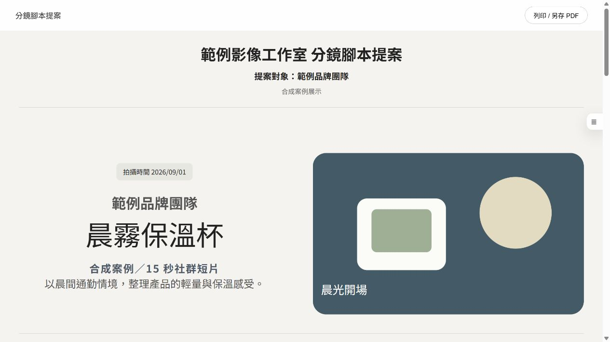
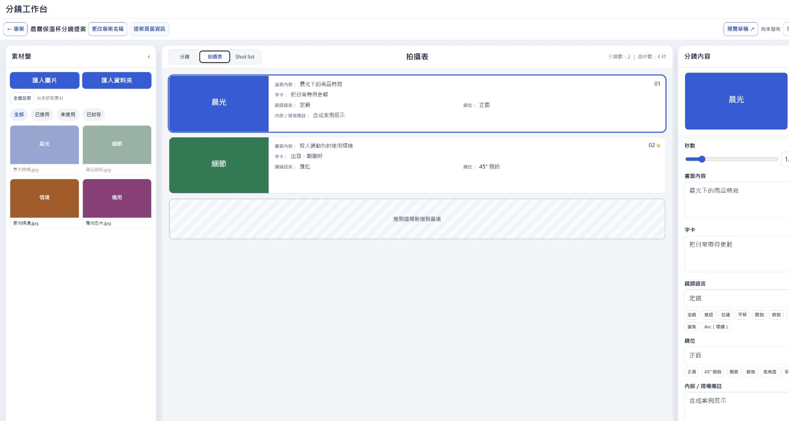

BEFORE / INTERNAL
回到精選案例
分鏡提案
CLIENT-FACING PROPOSAL / SYNTHETIC DATA
FEATURED CASE / BUILD
分鏡提案
工作台
把製作資訊整理成可以一起確認的提案頁。

01 / WHAT I MADE
讓製作資訊能在同一處工作。

02 / BEFORE · AFTER
先在內部整理，再變成可閱讀的提案。
同一份製作思考，依照閱讀對象轉成不同的資訊密度。
AFTER / CLIENT-FACING
提案端
把需要確認的畫面與資訊，收斂成容易閱讀的一頁。03 / EVIDENCE
讓等待變短，也保留確認邊界。
- Draft Preview
- 62–66s → 約 11.5s
- Published Preview
- 102.7s → 約 20.6s
- Automated Checks
- 107 項通過
代表性專案實測／checkpoint 紀錄，非 SLA。
04 / ROLE · STACK
我做了什麼
定義從製作資訊到提案閱讀頁的結構，設計工作台與確認節點，並將工具實作成可持續使用的工作流程。
SECONDARY DETAIL
- Workflow Design
- Interface Build
- Google Apps Script
- Google Sheets